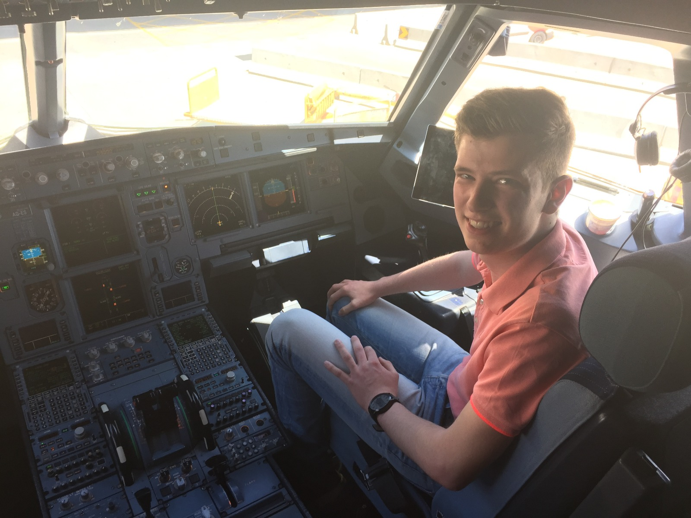
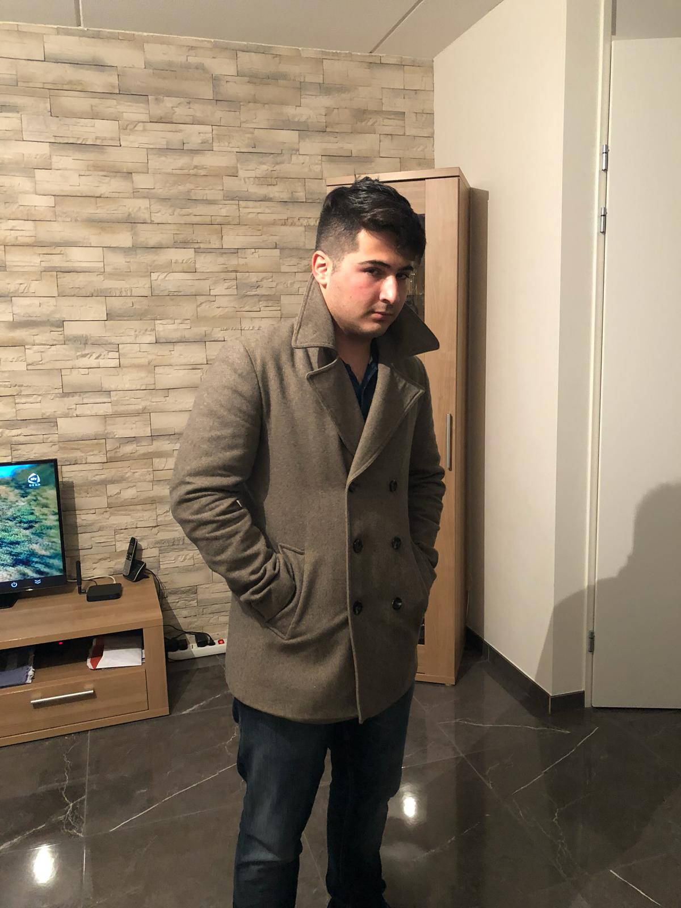

Over Ons
Wie zijn wij?
Wij zijn de Bergklimmers-groupe, en we bestaan uit 3 leden.
Jurg Verhoeven (17), Juriaan Pijls (20) en Umied Alakbarov (18).
Jurg Verhoeven
'Ontwikkelen is een passie'
Als je gevoel hebt voor het ontwikkelen, kun je mooie dingen realiseren.
Daarnaast stopt ontwikkelen ook niet, het zit immers in onze genen. Dat maakt mij gedreven om iets nieuws te ontwikkelen.
Zo heb ik zelf een applicatie ontwikkelt voor een autobedrijf, daarnaast gebruik ik mijn kennis om het thuis te gebruiken.
Juriaan Pijls
'Succes ligt in kleine details'
In andere perspectieven kijken, en samen met de klant kijken naar hun wensen.
Door de specifieke wensen te benoemen voelt de klant zich gehoord. Dat maakt de klant enthousiast over onze diensten.
Zo kun je je onderscheiden van de andere bedrijven en dat levert dus dat succes op.
Umied Alakbarov
'Risico nemen is niks mis mee'
Waar veel bedrijven stoppen, gaan wij nog een stapje verder. Het maximale eruit halen voor de klant.
Ook dit zorgt ervoor dat we ons kunnen onderscheiden van andere bedrijven.
